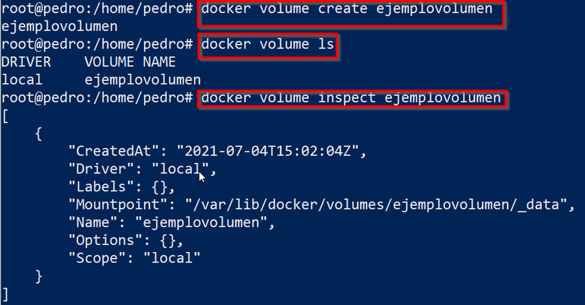

Los contenedores no tienen acceso al sistema de archivos y son simplemente un conjunto de procesos y librerías aislados del resto de los elementos del sistema operativo anfitrión, al eliminarse también se eliminan los datos que contiene.
Para solucionar este problema existen diferentes alternativas, siendo la más usual la de creación de volúmenes y asignación a los contenedores.
Para crear un volumen en Docker:
docker volume create [nombre_volumen]
Para listar los volúmenes existentes:
docker volume lsY para ver los detalles de alguno de ellos:
docker volume inspect [nombre]
Por último, para borrar un volumen usar el comando:
docker volume rm [nombre_contenedor]
Para “montar” el volumen en el árbol de directorios del contenedor usar el comando run con el parámetro mount en el que se indica el volumen con source y con target el punto de montaje dentro del contenedor. Un ejemplo con el volumen anterior:
docker run --source=ejemplovolumen, target/var/lib/mysql
Unidad lógica de almacenamiento asiganda a un tipo de sistema de archivos.